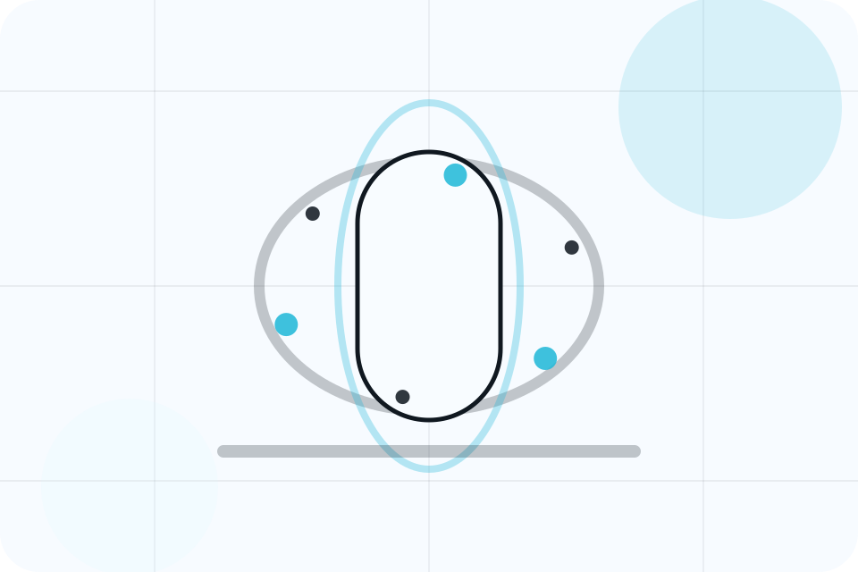
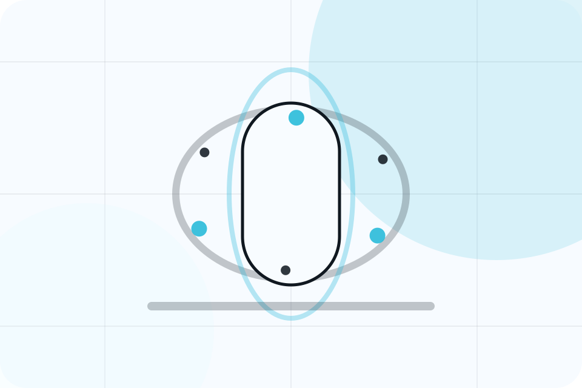
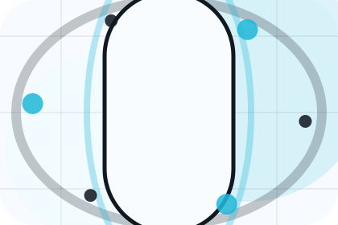
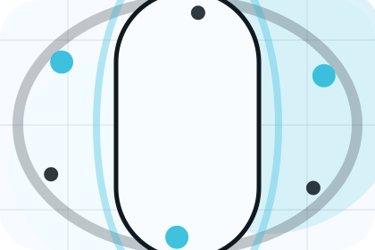
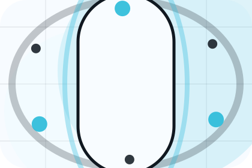
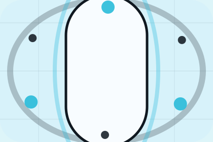

Details
What information helps Aster respond with a useful answer instead of a generic reply.
Contact / 01
Contact opens as a clear healthcare decision hub: what Aster offers, who it helps, why it matters, and which route to take first.
The first screen combines positioning, proof, primary action, and fast internal navigation, so people can act immediately or compare the rest of the contact route with context.
Body scan split hero
Select the closest route and Aster keeps the next step, proof, and follow-up expectation aligned with fear reduction and care confidence.

Contact / 02
Appointments makes the contact path concrete: what to send, how the response works, and what Aster needs before visitors book an appointment.
The section reduces contact friction by naming the channel, expected detail, privacy path, and response expectation instead of dropping visitors into a generic form.
Book AppointmentWhat information helps Aster respond with a useful answer instead of a generic reply.
How the visitor should think about response, urgency, location, or availability.
The expected next message keeps scope, timing, and the first practical step clear.
Contact / 03
Form makes the contact path concrete: what to send, how the response works, and what Aster needs before visitors book an appointment.
The section reduces contact friction by naming the channel, expected detail, privacy path, and response expectation instead of dropping visitors into a generic form.
Book AppointmentAster keeps form practical: send the key details, choose the right contact route, and know what kind of reply to expect.
Book Appointment
Contact / 04
Phone makes the contact path concrete: what to send, how the response works, and what Aster needs before visitors book an appointment.
The section reduces contact friction by naming the channel, expected detail, privacy path, and response expectation instead of dropping visitors into a generic form.
Book Appointment

What information helps Aster respond with a useful answer instead of a generic reply.
Contact / 05
WhatsApp makes the contact path concrete: what to send, how the response works, and what Aster needs before visitors book an appointment.
The section reduces contact friction by naming the channel, expected detail, privacy path, and response expectation instead of dropping visitors into a generic form.
Book AppointmentWhat information helps Aster respond with a useful answer instead of a generic reply.
How the visitor should think about response, urgency, location, or availability.
The expected next message keeps scope, timing, and the first practical step clear.
Contact / 06
Location makes the contact path concrete: what to send, how the response works, and what Aster needs before visitors book an appointment.
The section reduces contact friction by naming the channel, expected detail, privacy path, and response expectation instead of dropping visitors into a generic form.
Book AppointmentWhat information helps Aster respond with a useful answer instead of a generic reply.
How the visitor should think about response, urgency, location, or availability.
The expected next message keeps scope, timing, and the first practical step clear.
Contact / 07
Hours makes the contact path concrete: what to send, how the response works, and what Aster needs before visitors book an appointment.
The section reduces contact friction by naming the channel, expected detail, privacy path, and response expectation instead of dropping visitors into a generic form.
Book AppointmentAster keeps hours practical: send the key details, choose the right contact route, and know what kind of reply to expect.
Book AppointmentContact / 09
Support explains the practical scope, best-fit situations, and expected outcome so healthcare visitors can compare options without decoding jargon.
The section keeps the offer concrete: what is included, who it is best for, what decision it supports, and which linked route gives the deeper detail.
Open ContactWho should use support and when it belongs in the contact journey.
The practical benefit visitors should expect after choosing this route.

Where to compare details, pricing, support, or contact options before committing.
Contact / 10
Aster closes the contact route with a clear action, a quick reminder of the value, and a low-friction way to book an appointment.
Visitors who are ready can use the primary action. Visitors who are still comparing can scan the section links, proof, and support routes before they book an appointment.
Book AppointmentThe final block keeps the choice simple: act now, compare one more proof route, or send enough detail for a focused response.
Book Appointmentfear reduction and care confidence
A scan-first care journey with minimalist copy, body-data panels, instant-results proof, and a direct appointment CTA. Contact ends with a direct path to book an appointment, plus enough context for visitors who still need to compare.

Book AppointmentInformation supports planning and is not a diagnosis or emergency instruction. People should use local emergency services for urgent symptoms.